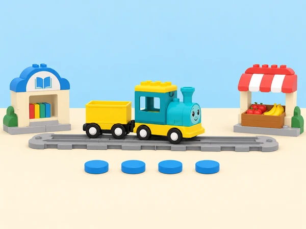

Quin nombre de l’app necessita el tren per arribar a cada estació i com comprovem que ha fet el trajecte esperat?
La classe prepara una ruta entre espais familiars —per exemple, la biblioteca, el mercat i la plaça— representats en una maqueta de taula. Primer compara distàncies amb una mateixa unitat; després investiga què passa quan tria diferents nombres de moviment en l’app Coding Express. Les comparacions es refereixen al tren i al circuit concret de prova: els nombres de l’app no són metres, no indiquen quant hi ha entre llocs reals i poden variar segons el circuit i la configuració.
Aprenentatges: mesurar amb unitats no convencionals repetides, comparar «més curt/més llarg», ordenar nombres, anticipar un resultat, descriure una seqüència de parades i revisar la predicció observant el moviment.
Prepareu un set Coding Express, l’app oficial en una tauleta compatible i el tren connectat abans de provar els nombres; una via de doble extrem; targetes de construcció del set si estan disponibles; models menuts propis de paper o peces; targetes amb noms o pictogrames de tres parades; fitxes d’unitat totes iguals; cinta de paper i un full de registre. La lliçó oficial treballa amb fins a quatre participants, tres models de parada i una ruta de doble extrem. Comproveu quins nombres d’avanç apareixen en la versió d’app del centre i si el tren respon de manera consistent en aquesta via.
Marqueu distàncies sobre la maqueta amb peces iguals o segments de paper de la mateixa llargària. No mesureu el cos de l’alumnat ni exigiu que camine entre punts; qui ho preferisca pot avançar una fitxa sobre un plànol. Si la connexió o la funció numèrica no està disponible, feu la comparació amb unitats de paper i anoteu que es tracta d’un model desconnectat, sense atribuir al tren una lectura que no s’ha produït.
Vocabulari: mesurar, distància, pas, unitat, comparar, vehicle, avançar, retrocedir, més curt i més llarg. Comproveu que «pas» puga significar un moviment del tren o una unitat repetida sobre el paper segons el context; no els tracteu com la mateixa mesura.
Per a qui preferisca no caminar, una fitxa representa el trajecte en el mapa i es mou una casella cada vegada. No compareu longituds de pas entre persones ni presenteu el recompte d’una caminada individual com una mesura exacta. Evidència: predicció, recompte amb unitat acordada i comparació «més curt/més llarg». Preguntes docents: «Què hem mantingut igual? Quina distància ha resultat més llarga i com ho sabem?»
Proveu cada valor amb un tram lliure i segur, un cada vegada. Registreu on s’ha aturat el tren; no suposeu que el nombre equival a centímetres ni que produeix la mateixa distància en qualsevol muntatge. A continuació, cada equip selecciona un nombre per arribar a una parada: marca la predicció al plànol, executa el trajecte i compara l’arribada amb el resultat esperat. Si cal corregir, canvieu una sola selecció i torneu a provar. Evidència: taula «parada / nombre triat / predicció / on s’ha aturat / què revisaríem». Preguntes docents: «Quin valor creieu que farà avançar més el tren? Què heu observat quan l’heu provat?»
Com a extensió per als equips preparats, compareu dos nombres consecutius de l’app o dissenyeu una ruta amb el valor més gran disponible. Useu les paraules «més/menys» només per descriure el moviment observat en aquesta prova; no convertiu el valor de la interfície en una unitat mètrica. Tanqueu amb una explicació de quina evidència ha ajudat a decidir el nombre i quina limitació té el model de distàncies. Evidència: mapa final, seqüència oral o visual i justificació de la comparació. Preguntes docents: «Quines parades hem fet i en quin ordre? Què hauríem de mesurar d’una altra manera si volguérem descriure un lloc real?»
Recolliu el mapa de parades, les unitats emprades, les prediccions dels nombres, les observacions del moviment i la descripció final del trajecte. Observeu si l’alumnat:
No cal encertar el primer nombre: importa explicar què ha passat i com s’ha pres la decisió. La carpeta pot contindre un full de comparació, una captura o dibuix dels nombres disponibles i la ruta final marcada per una altra parella. Si l’app no funciona, documenteu la versió de paper i no la presenteu com si el tren haguera executat les ordres.
Oferiu nombres i estacions amb pictogrames grans, relleu o una paraula llegida en veu alta. La ruta es pot representar amb una fitxa sobre la taula; ningú ha de caminar una distància ni arribar físicament a un lloc. Separeu les targetes perquè siguen fàcils d’agafar, doneu temps addicional per anticipar la ruta i reduïu el nombre de parades quan hi haja massa estímuls. Permeteu que una persona trie l’ordre, una altra prepare targetes i una tercera observe el moviment o dicte el registre. Es pot respondre assenyalant, amb comunicació augmentativa o mitjançant una demostració compartida.
Adapta Math – Distance: conversa sobre distàncies, elecció de dos o tres parades, recompte de passos, comparació entre trajectes, construcció de models amb targetes, via de doble extrem, exploració a l’app dels nombres que controlen l’avanç del tren i ampliació amb més parades. La biblioteca, el mercat, les targetes, la maqueta i els instruments de registre són propis. L’app no es tracta com un mesurador de distàncies reals; l’alumnat comprova el moviment del tren i descriu el resultat del model.